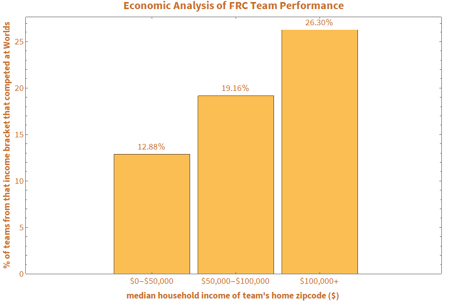

Socioeconomics in FIRST Robotics
Challenge
In high school, I was on a robotics team. Every year we built a robot to compete against 3500+ teams nationally, in competitions organized by a nonprofit called FIRST. I was also involved local social justice work, which made me curious: How is a team's performance affected by its economic situation?
Solution Summary
To explore the question quantitatively, I had to collect data, conduct a statistical analysis, and visualize the results.
Collecting Data
First, I measured team performance based on points scored or matches won, but the data was too noisy to be useful.
Looking for something else, I collected data for which teams qualified for the world championship by coding a program that navigates the FIRST website, like a person would, and scrapes the list of qualifying teams off of it and their zip code.
To measure a team's economic situation I looked at percent free and reduced lunches (no data for private schools!), team budgets (no data at all!), and finally Census income data for each team's school's zip code.
Statistical Analysis
Finally, after taking a Yale data analysis class, I, and two partners, executed a more thorough statistical analysis of demographic information in FIRST. This time I queried the FIRST API for the data. Some highlights are shown below, and the full report is linked here.